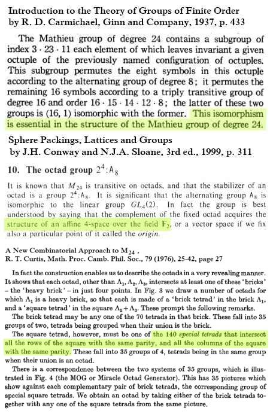
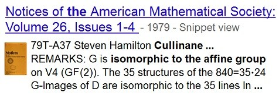
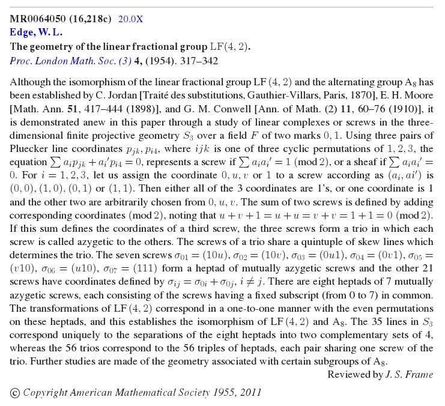

| Finite Geometry
Notes
|
Here is some supporting material—

The passage from Carmichael above emphasizes the importance of
the 4x4 square within the MOG.
The passage from Conway and Sloane, in a book whose first
edition
was published in 1988, makes explicit the structure of the MOG's
4x4 square as the affine 4-space over the 2-element Galois field.
The passage from Curtis (1974, published in 1976) describes 35
sets
of four "special tetrads" within the 4x4 square of the MOG. These
correspond to the 35 sets of four parallel 4-point affine planes within
the square. Curtis, however, in 1976 makes no mention of the affine
structure, characterizing his 140 "special tetrads" rather by the parity
of their intersections with the square's rows and columns.
The affine structure appears in the 1979 abstract mentioned above—

The "35 structures" of the abstract were listed, with an
application to
Latin-square orthogonality, in a note
from December 1978—
(These 35 structures comprise, it
turns out, the Rosenhain and Göpel
tetrads
described by R. W. H. T. Hudson in his 1905 classic Kummer's Quartic Surface.
See Rosenhain and Göpel
tetrads in PG(3,2).)
See also a 1987 article by R. T. Curtis—
“In this paper we describe various techniques, some of which are already used by devotees of the art, which relate certain maximal subgroups of the Mathieu group M24, as seen in the MOG, to matrix groups over finite fields. We hope to bring out the wealth of algebraic structure* underlying the device and to enable the reader to move freely between these matrices and permutations. Perhaps the MOG was mis-named as simply an ‘octad generator’; in this paper we intend to show that it is in reality a natural diagram of the binary Golay code.”
(Received July 20 1987)
– Proceedings of the Edinburgh Mathematical Society (Series 2) (1989), 32: 345-353
* For instance:
The following 1955 review of a 1954 paper by W. L. Edge, "The Geometry of the Linear Fractional Group LF(4,2)," brings out the wealth of geometric structure underlying the Curtis device. The 35 line-diagram structures pictured above provide another approach to this geometric structure and to the algebraic (diamond ring) structure of the Galois tesseract.

* Last modified on March 24, 2013.
** See, for instance, Coxeter's 1950 "Self-Dual
Configurations and Regular Graphs,"
Bull.
Amer. Math. Soc. vol. 56, pp. 413-455,
figures 5 and 6 on p. 415.